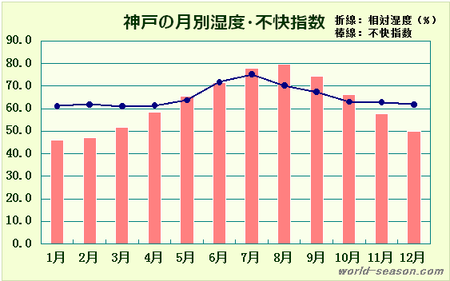

データ参照元：日本の季節（http://japan.world-season.com）
神戸の月別気温と相対湿度と不快指数の気象統計データ（https://japan.world-season.com/climate-kobe/#toc3）
神戸の月別相対湿度と不快指数（https://japan.world-season.com/climate-kobe/#toc2）
| 最高気温 (℃) |
平均気温 (℃) |
最低気温 (℃) |
相対湿度 (％) |
不快指数 | |
|---|---|---|---|---|---|
| 1月 | 9.4 | 6.1 | 3.1 | 61.1 | 46.2 |
| 2月 | 10.3 | 6.9 | 3.7 | 61.8 | 47.3 |
| 3月 | 13.7 | 9.9 | 6.3 | 61 | 51.6 |
| 4月 | 18.7 | 14.8 | 11.2 | 61.4 | 58.6 |
| 5月 | 23.7 | 19.7 | 16.3 | 63.7 | 65.6 |
| 6月 | 26.8 | 23.4 | 20.7 | 71.8 | 71.6 |
| 7月 | 30.3 | 27.1 | 24.8 | 75.2 | 77.7 |
| 8月 | 32.3 | 28.8 | 26.3 | 70.2 | 79.5 |
| 9月 | 29 | 25.5 | 22.6 | 67.4 | 74.3 |
| 10月 | 23.6 | 20.2 | 17.1 | 63 | 66.2 |
| 11月 | 17.4 | 14.1 | 11.1 | 62.8 | 57.5 |
| 12月 | 12 | 8.7 | 5.7 | 61.9 | 49.9 |
| 不快指数 | 体感 |
|---|---|
| ～50 | 寒くてたまらない |
| 50～55 | 寒い |
| 55～60 | 肌寒い |
| 60～65 | 何も感じない |
| 65～70 | 快適 |
| 70～75 | 不快感を持つ人が出始める |
| 75～80 | 半数以上が不快に感じる |
| 80～85 | 全員が不快に感じる |
| 85～ | 暑くてたまらない |
